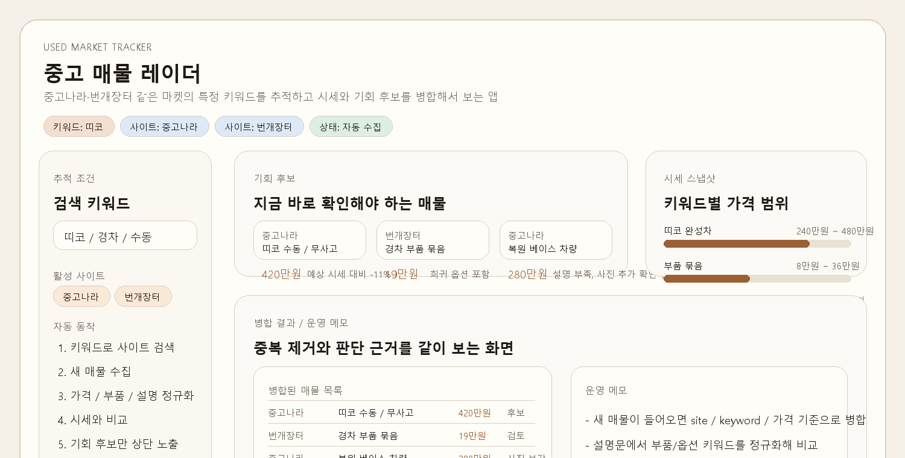
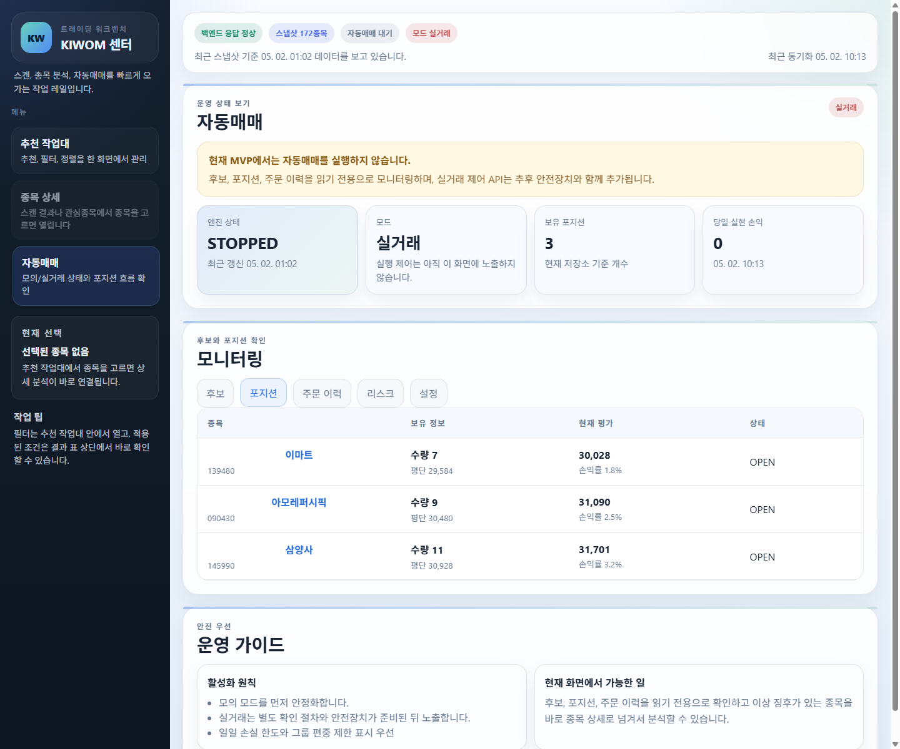
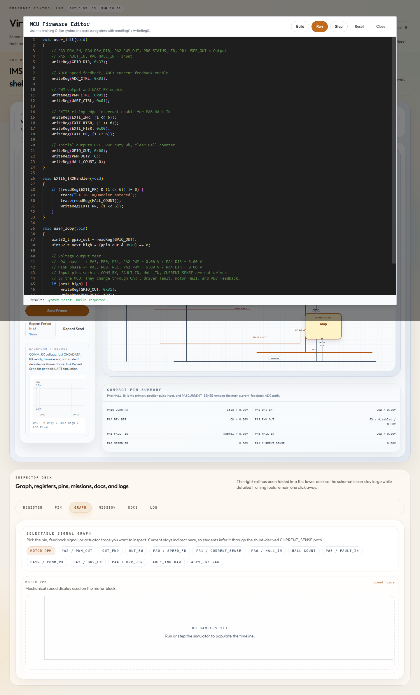

저를 짧게 설명하면
자동차 임베디드 분야에서 모터 제어, 바디 제어기, AUTOSAR 자동화처럼 정확한 동작과 반복 검증이 중요한 업무를 경험했습니다. 개인 프로젝트에서는 이 경험을 바탕으로 상태를 놓치기 쉬운 작업, 반복 검색이 필요한 정보, 판단 기준이 섞이기 쉬운 흐름을 작은 도구와 화면으로 정리했습니다.
Personal projects
배운 내용을 그냥 넘기지 않고, 실제로 써볼 수 있는 작은 도구로 만들어 봅니다. 원격 작업 관리, AI 작업 분업, 매물 추적, 조건 검토, MCU 시뮬레이터처럼 상태를 놓치기 쉬운 문제를 입력, 판단, 실행, 기록 흐름으로 나누고 실제 화면에서 확인 가능한 형태로 정리해 왔습니다.
01
소개
자동차 임베디드 분야에서 모터 제어, 바디 제어기, AUTOSAR 자동화처럼 정확한 동작과 반복 검증이 중요한 업무를 경험했습니다. 개인 프로젝트에서는 이 경험을 바탕으로 상태를 놓치기 쉬운 작업, 반복 검색이 필요한 정보, 판단 기준이 섞이기 쉬운 흐름을 작은 도구와 화면으로 정리했습니다.
02
실무 경험
차량 내부 냉매 유로가 목표 위치까지 안정적으로 열리고 닫히도록 모터 구동 시퀀스와 위치 판단 로직을 구현·검증했습니다. PMSM 모터의 힘을 기어와 액추에이터로 전달하고, 상전환, zero crossing 감지, sensorless 제어, STALL 감지, 재시도, 목표 위치 정지처럼 실제 동작 안정성에 영향을 주는 판단 흐름을 맡았습니다.
운전자가 조작한 기능이 실제 차량 제어와 진단 흐름으로 이어지는 과정을 다뤘습니다. 조향 컬럼 모듈, 파워 시트 유닛, 통합 제어기 선행 과제를 통해 차량 기능이 사용자 입력, 통신, 진단, 기능안전 문서와 어떻게 연결되는지 경험했습니다. 구현뿐 아니라 문서 정리와 협업 산출물 관리까지 함께 다뤘습니다.
반복되는 차량 소프트웨어 설정 작업을 자동화하는 흐름을 구성했습니다. AUTOSAR ARXML 설정값을 추출해 C 코드 생성 입력으로 변환하고, 생성 결과를 WSL/GCC 빌드 환경에서 확인할 수 있게 만드는 방향으로 작업했습니다.
03
개인 프로젝트
밖에서도 작업 상태를 확인하는 도구
로컬 PC 앞에 없어도 Discord에 승인된 작업 요청을 남기고, 진행 상황과 결과를 메시지로 확인할 수 있게 만든 도구입니다. 채널별 작업공간 연결, 작업 큐, 세션 상태 저장, 로그 회신, 중지/재시작 흐름을 한곳에 묶어 원격에서도 작업이 멈췄는지, 답변이 필요한지, 완료됐는지 놓치지 않도록 했습니다.

AI에게 일을 나누어 맡기는 작업 구조
하나의 AI 세션에 모든 일을 맡기지 않고, 조사·구현·검증·리뷰를 역할별로 나누기 위한 작업 환경입니다. 각 세션의 중간 결과와 결정 이력을 한곳에 모아 비교하고, 충돌이나 빠진 부분을 다시 확인할 수 있도록 구성했습니다. 요청을 작업 단위로 쪼개고, 에이전트별 결과를 다시 합치는 흐름을 실험했습니다.
Agent 01 · Planner
$ codex split-request readyscope: personal projects
send: copy + visual tasks
handoff: agent-02, agent-03
Agent 02 · Implementer
$ codex edit ui workingpatch: index.html
patch: styles.css
reply: changed files
Agent 03 · Verifier
$ codex screenshot checkingopen: #project-stock
open: #project-mcu
report: layout issues
Agent 04 · Reviewer
$ codex review-copy reviewingtone: non-resume
check: visitor clarity
return: fixes
중고거래 매물 추적
중고나라, 번개장터처럼 여러 사이트에 흩어진 관심 매물을 모아 가격, 등록 시점, 상태, 확인 포인트를 비교하는 도구입니다. 허용된 범위의 검색 결과를 수집하고, 병합, 스케줄링, 알림 흐름을 나누어 기준가 대비 편차·중복 제거·주의 신호·확인 우선순위를 계산했습니다. 자동 구매가 아니라 관심 후보를 빠르게 비교하는 화면으로 정리했습니다.

주식 조건 검토 도구
관심 종목, 차트 조건, 보유 상태, 주문 이력, 실행 전 체크 항목을 나누어 보여주는 개인용 검토 도구입니다. 매매를 대신 판단하는 화면이 아니라, 어떤 조건을 보고 어떤 상태에서 실행했는지 기록을 남기기 위해 구성했습니다. 실행 전에는 데이터 최신성, 매수 가능 시간, 손실 한도, 보유·미체결 주문 같은 안전 확인 단계를 분리했습니다.

장비 없이 흐름을 확인하는 MCU 학습 도구
브라우저에서 코드를 입력하고 실행하면 가상 보드, 레지스터 상태, 입력값, 주변장치 신호 흐름을 함께 확인할 수 있는 학습용 시뮬레이터입니다. Monaco 코드 편집기와 Web Worker 실행 환경을 분리하고, GPIO/ADC/PWM/UART/EXTI 레지스터 맵, 홀 센서 인터럽트와 모터 상태 변화를 tick 단위로 관찰할 수 있게 구성했습니다.

04
작업 방식
문제 정의
계속 확인해야 하는 상태, 놓치기 쉬운 조건, 수작업으로 반복되는 과정을 먼저 관찰합니다.
구조 설계
큰 기능을 한 번에 만들기보다 사용자가 확인해야 할 흐름과 기준을 단계별로 분리합니다.
구현·계측
상태, 로그, 버튼, 결과처럼 사용자가 직접 확인할 수 있는 형태로 구현합니다.
리뷰·검증
왜 만들었는지, 어떤 기준으로 설계했는지, 다음에 무엇을 개선할 수 있는지 기록합니다.